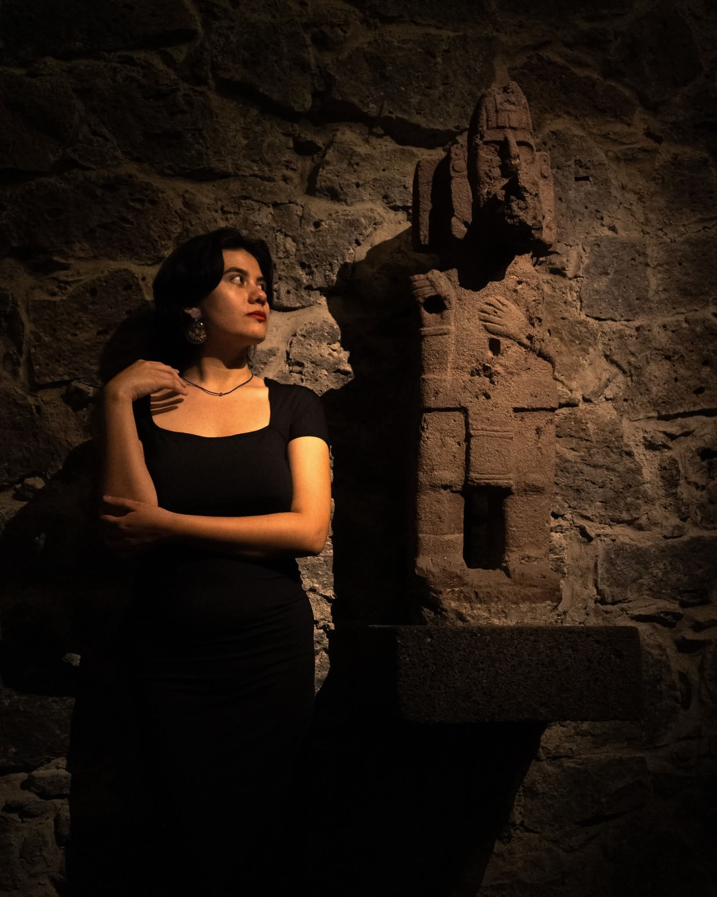

Capital Natural del Sureste de México
Plataforma interactiva en R Shiny para análisis territorial, monitoreo de ecosistemas y visualización de recursos naturales en el Sureste Mexicano.
Geomática · Percepción Remota · Ciencia de Datos Geoespaciales
Gestora ambiental y especialista en geomática con maestría en Ciencias de la Información Geoespacial. Mi trabajo se centra en la aplicación de tecnologías espaciales, percepción remota y aprendizaje profundo para la conservación, restauración ecológica y monitoreo territorial.
A través de mis proyectos traduzco problemas espaciales complejos en mapas, modelos y sistemas interactivos que ayudan a entender la dinámica de nuestros ecosistemas y territorio.

(Reemplaza con tu imagen)
Programas educativos que he diseñado y facilitado en ciencia de datos geoespaciales.
Introducción al análisis de datos con R. Fundamentos de programación, manipulación de dataframes y visualización estadística aplicada a ciencias ambientales.
Sistemas de información geográfica. Creación de capas vectoriales, manipulación de rasters, georreferenciación y salida cartográfica profesional.
Automatización de mapas en serie. Generación automatizada de mapas temáticos personalizados mediante la herramienta Atlas para entregas masivas.
Automatización avanzada con Python dentro de QGIS. Desarrollo de scripts, geoprocesamiento programado y personalización de la consola para flujos científicos.
Mapas interactivos y plataformas que he diseñado y publicado.
Plataforma interactiva en R Shiny para análisis territorial, monitoreo de ecosistemas y visualización de recursos naturales en el Sureste Mexicano.
Dashboard analítico para el estudio y monitoreo de patrones de movilidad espacial en el sitio arqueológico de Uxmal y zonas de influencia.
Trayectoria formativa en geociencias, gestión ambiental y geointeligencia computacional.
Centro de Investigación en Ciencias de Información Geoespacial (CentroGeo)
2023 – 2025
Especialización en Geointeligencia Computacional. Tesis: segmentación semántica con redes neuronales profundas aplicada al análisis de la línea costera de Yucatán.
Universidad Juárez Autónoma de Tabasco (UJAT)
2014 – 2020
Formación en manejo de ecosistemas, planeación sustentable y aplicación cartográfica ambiental.
Instituto de Ecología, A.C. (INECOL)
Modelado del paisaje, valoración y recuperación funcional de ecosistemas degradados.
Abierta a colaboraciones en investigación, consultoría geoespacial y capacitación.